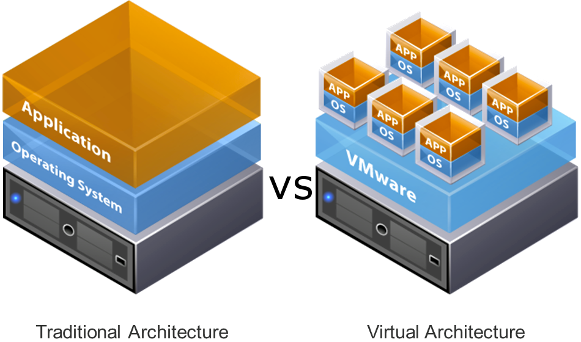
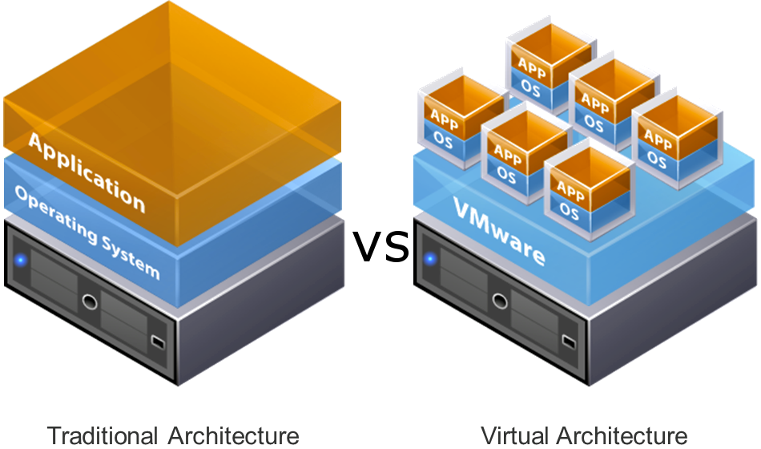
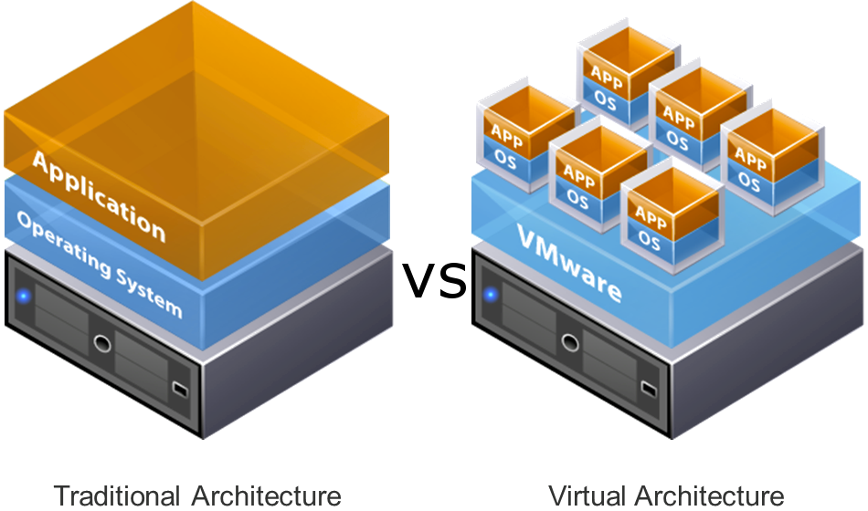

Visualizacion de elementos
Usted podra visualizar todo el contenido presentado referente a los elementos que califican para su negocio

Usted podra visualizar todo el contenido presentado referente a los elementos que califican para su negocio